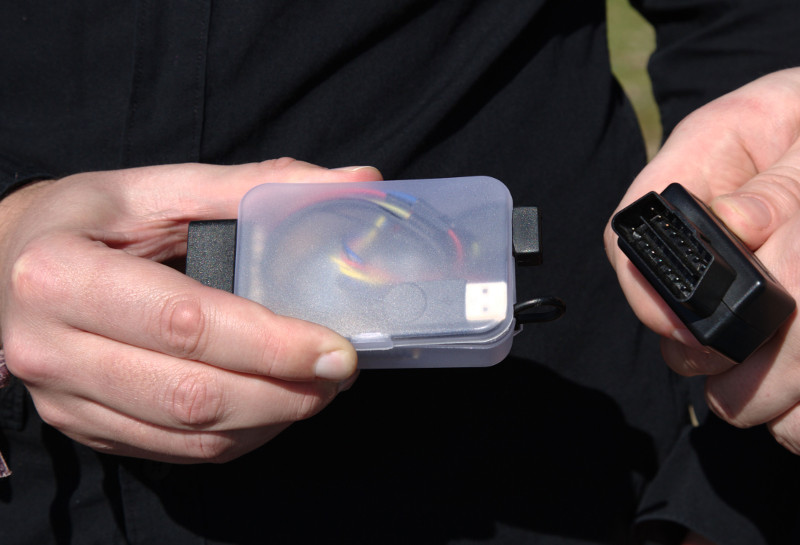
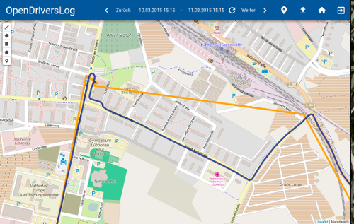

<link rel="import" href="../../elements/odl/odl-theme.html">
<link rel="import" href="../../elements/behaviors/odl-behavior.html">
<link rel="import" href="../../components/paper-card/paper-card.html">
<link rel="import" href="../../components/paper-item/paper-icon-item.html">
<link rel="import" href="../../components/iron-icons/maps-icons.html">
<link rel="import" href="../../components/iron-icons/hardware-icons.html">
<link rel="import" href="../../components/iron-icon/iron-icon.html">
<link rel="import" href="../../components/i18-n/i18-n.html">
<dom-module id="page-welcome">
    <template>
        <i18-n-domain id="domain" on-i18-n-locale-ready="_localeReady" domain="welcome" locale="{{lang}}"  messages-url="public/translations-autogenerated"></i18-n-domain>
        <style include="odl-styles"></style>
        <style>
            paper-card {
                margin:0.25em;
            }
            paper-card h2 {
                padding: 0.25em;
            }
            paper-card p {
                padding: 0.5em;
            }
        </style>
        <div class="vertical layout">

            <div class="horizontal layout">


                <div class="vertical layout flex-4">
                    <paper-card>
                        
                        <p>
                            [[t.welcome_Message]]
                        </p>
                        <div class="card-actions center">
                            <a href="{{urlFor('trips')}}"> [[t.welcome_selectDb]]</a>
                            <a href="{{urlFor('upload')}}">[[t.welcome_uploadData]]</a>
                        </div>
                    </paper-card>
                </div>

                <div class="vertical layout flex-4">
                    <paper-card class="odl-tertiary">
                        <h2>[[t.DidYouKnow]]</h2>

                        <p>[[t.GreatAlgorithms]]</p>
                    </paper-card>

                    <paper-card class="odl-tertiary">
                        <h2>[[t.CurrentNews]]</h2>

                        <div class="card-content">
                            <div class="vertical layout odl-primary">
                                <paper-icon-item>
                                    <iron-icon icon="send" item-icon></iron-icon>
                                    <strong>Neue Funktion:</strong> GeoZonen</strong>
                                </paper-icon-item>
                                <paper-icon-item>
                                    <iron-icon icon="send" item-icon></iron-icon>
                                    <strong> Technisch: </strong> Umstellung der Datenbank </strong>
                                </paper-icon-item>
                                <paper-icon-item>
                                    <iron-icon icon="send" item-icon></iron-icon>
                                    <strong> Fix: </strong> Probleme beim Import der Daten von iOS7 </strong>
                                </paper-icon-item>
                                <paper-icon-item>
                                    <iron-icon icon="send" item-icon></iron-icon>
                                    <strong> Gesetzliche Neuerung: </strong> Fahrtenbücher nun verpflichtend für alle
                                    Gewerbetreibenden
                                </paper-icon-item>
                            </div>
                        </div>
                    </paper-card>
                </div>
            </div>
        </div>
        <paper-card style="padding: 1em;" elevation="2">

            <h3>
                <iron-icon icon="maps:directions-car"></iron-icon>
                <strong>Schritt 1:</strong> Prototyp fürs Auto
            </h3>
            

            <div>
                <p> Bitte stecken Sie das Gerät in die OBD-Schnittstelle ihres Fahrzeugs. Wo Sie diese finden ist abhängig vom
                    Fahrzeugtyp - in der Regel ist sie allerdings nicht weiter als einen Meter um den Fahrersitz herum zu
                    finden.</p>
            </div>
            <h3>
                <iron-icon icon="hardware:phone-android"></iron-icon>
                <strong>Schritt 2:</strong> Apps fürs Smartphone
            </h3>
            <div><p>Zur Verwaltung unseres Gerätes bieten wir Ihnen verschiedene Möglichkeiten. Eine davon sind Smartphone Apps,
                welche Sie hier finden:</p>
                <!--a href="https://play.google.com/store/search?q=pub:ODL">
                    
                </a-->
            </div>
            <h3>
                <iron-icon icon="hardware:laptop"></iron-icon>
                <strong>Schritt 3:</strong> Benutzen unserer Web-App
            </h3>
            <div>
                

                <p>Damit Sie ihr Fahrtenbuch effektiv verwalten können, nutzen Sie am besten unsere Web-Applikation. Neben der
                    Karte und den Fahrten, bietet sich hier die Möglichkeit zur Erstellung von GeoZonen.</p></div>
            <h3>
                <iron-icon icon="maps:place"></iron-icon>
                <strong>Schritt 4:</strong> Schreiben Sie uns!
            </h3>
            <div><p>Wie gefällt Ihnen unser System? Haben Sie vielleicht Ideen wie es noch einfacher bedient werden könnte? </p>

                <p> Wir würden uns freuen davon zu hören, deswegen schreiben sie uns! Klicken Sie dazu, wann immer es Ihnen
                    einfällt, auf dieses Symbol in der Navigationsleiste:</p>
                <center><i class="medium mdi-social-notifications-on light-blue darken-4" style="color:white;"></i></center>
                <p>
                    Nur zusammen können wir ein elektronisches Fahrtenbuch schaffen, welches wirklich einfach zu bedienen ist.
                </p>
            </div>
        </paper-card>
        &nbsp;
        </div>
        </div>
    </template>
    <script>
        Polymer({
            is: "page-welcome",
            properties: {
            },
            behaviors:[OdlBehaviors.OdlBehavior],
            ready:function() {
            },
            getHelpText: function(){
                if(this.t && this.t.helpText_welcome) {
                    return this.t.helpText_welcome;
                } else {
                    return "Unknown";
                }
            },
            _onTranslationUpdate:function(t) {
                if(this.t) {
                    this.navFunctions=[
                        //{key:'Function',title: this.t["Function"], icon: 'dns', href:'javascript:alert("Implement me!"'}
                    ];
                    this.fire("new-nav-functions");
                }
            }
        });

    </script>

</dom-module>